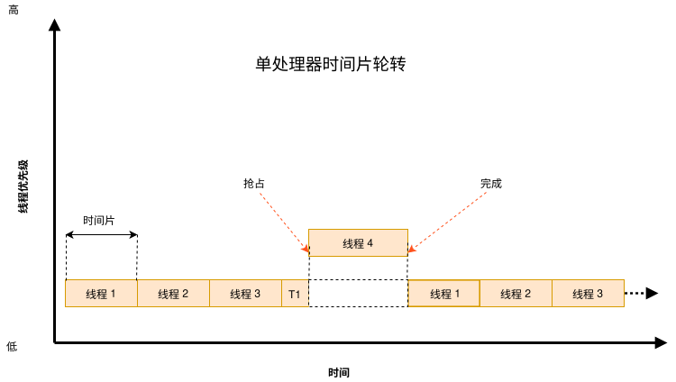

线程调度（Scheduling）
非官方简体中文译本 · E02 · 英文基线 4.5.99 · 全站目录（79 篇） · E 批目录 · 本页英文原文
内核基于优先级的调度器（scheduler）允许应用的多个线程共享 CPU。
基本概念
调度器决定任意时刻可以执行哪一个线程。这个线程称为当前线程（current thread）。
调度器在一些时刻有机会更换当前线程，也就是把 CPU 从一个线程切换到另一个线程。这些时刻称为重新调度点（reschedule points）。可能的情形包括：
线程从运行态进入挂起态或等待态，例如调用
k_sem_take()或k_sleep()。线程进入就绪态（ready state），例如调用
k_sem_give()或k_thread_start()。处理中断后返回线程上下文。
正在运行的线程调用
k_yield()。
线程主动发起使自身进入挂起态或等待态的操作时，便进入睡眠状态。
调度器切换当前线程，或 ISR 取代当前线程执行时，内核先保存该线程的 CPU 寄存器值。线程恢复执行时，再还原这些寄存器值。
调度算法
调度器选择优先级最高的就绪线程成为当前线程。如果有多个优先级相同的就绪线程，选择等待时间最长的那一个。
线程的相对优先级首先取决于静态优先级。如果启用最早截止期限优先调度（CONFIG_SCHED_DEADLINE），静态优先级相同的线程中，截止期限较早者优先。此时，只有静态优先级和截止期限都相同，两个线程才视为同一优先级。可通过 k_thread_deadline_set() 设置线程的截止期限。
说明
ISR 优先于线程执行。因此，除非中断已被屏蔽，否则当前线程随时可能被 ISR 打断。这既适用于协作式线程，也适用于抢占式线程。
构建内核时可以选择不同的就绪队列实现，在代码大小、运行时间的常数开销，以及线程数量增加后的性能之间取舍。
简单链表就绪队列（
CONFIG_SCHED_SIMPLE）就绪队列采用简单的无序链表。只有一个线程时，运行时间为常数、速度快，代码也很小。若系统代码空间紧张，并且队列中的可运行线程始终很少（例如最多约 3 个），应选择这种实现。在其他地方不使用红黑树的大多数平台上，可节省约 2 KB 代码空间。
红黑树就绪队列（
CONFIG_SCHED_SCALABLE）就绪队列采用红黑树，插入、删除的固定开销较大；在其他地方不使用红黑树的大多数平台上，会多占约 2 KB 代码空间。但线程数量增至数千时，仍能有效扩展并保持良好性能。
应用需要许多同时可运行的线程（大致超过 20 个）时可选此实现。大多数应用并不需要它。
传统多队列就绪队列（
CONFIG_SCHED_MULTIQ）采用经典的链表数组实现：每个优先级对应一条链表。
这对应于 Zephyr 1.12 之前使用的调度算法。
与简单调度器相比，它只增加很少的代码，几乎所有情况下均为 O(1)，且常数开销很小。不过，保存各链表表头需要相当多的 RAM。它也不支持需要更细粒度排序的截止期限调度，或需要遍历线程列表的 SMP 亲和性等功能。
就绪线程数量较少的典型应用，通常更适合简单调度器。
IPC 原语使用 wait_q 挂起线程，以便稍后唤醒。其底层数据结构和调度器有类似的实现选项。
可扩展的 wait_q（
CONFIG_WAITQ_SCALABLE）wait_q 采用平衡树。如果预计会有许多线程等待同一个同步原语，可选择它。若其他地方没有使用红黑树，与
CONFIG_WAITQ_SIMPLE相比约增加 2 KB 代码（可与CONFIG_SCHED_SCALABLE共用）；小队列的挂起和解除挂起也稍慢，但通常不是性能关键路径。简单双向链表 wait_q（
CONFIG_WAITQ_SIMPLE）wait_q 采用双向链表。如果在同一 IPC 原语上阻塞的线程不多，可选择这种实现。
协作式时间片轮转
协作式线程成为当前线程后，会一直运行到它主动执行使自身不再就绪的操作。因此，长时间计算可能给其他线程带来不可接受的调度延迟，包括同优先级甚至更高优先级的线程。

为避免这种情况，协作式线程可以不时主动让出 CPU，让其他线程运行。有两种做法：
抢占式时间片轮转
抢占式线程成为当前线程后，会一直执行到出现更高优先级的就绪线程，或自身执行了使其不再就绪的操作。因此，长时间计算也可能给其他线程（包括同优先级线程）带来不可接受的调度延迟。

为解决这个问题，抢占式线程可以按上述方式主动让出 CPU，也可以使用调度器的时间片机制，使其他同优先级线程得到运行机会。


说明
在 SMP 系统上，行为与上面的单处理器（UP）图类似，但线程 4 后不会立即运行线程 1；顺序会是线程 2、线程 3、线程 1……
调度器把每个 CPU 上的时间划分为一系列时间片（time slices），以系统时钟节拍（tick）计量。时间片长度可配置，也可在应用运行时更改。调度新线程时，时间片计时器会复位。
每个时间片结束时，调度器检查当前线程是否可抢占。若可以，它会代线程隐式调用 k_yield()，使其他同优先级的就绪线程有机会先运行。如果没有这样的线程，当前线程继续运行。
优先级高于指定界限的线程不参加抢占式时间片轮转，不会被同优先级线程抢占。应用因此可仅对时间要求较宽松的低优先级线程启用轮转。
说明
内核的时间片算法不保证同优先级线程公平分得 CPU 时间，因为它不测量每个线程实际运行了多久。不过，该算法确实保证线程在连续执行一个时间片后必须让出 CPU。
按线程设置时间片
k_sched_time_slice_set() 配置的全局时间片适用于优先级不高于指定阈值的可抢占线程。启用 CONFIG_TIMESLICE_PER_THREAD 后，可用 k_thread_time_slice_set() 为单个线程设置时间片。线程专属值优先于全局值，即使该线程的优先级高于全局轮转界限也生效。
除了以节拍为单位的时长，还可为线程的时间片注册到期回调。内核在中断上下文调用它，此时受影响的线程仍是当前线程。回调可调整线程下次执行的优先级或时间片，也可挂起线程。
锁定调度器
抢占式线程执行关键操作时，如果不希望被其他线程抢占，可调用 k_sched_lock()，让调度器暂时按协作式线程对待它，避免其他线程干扰该操作。
关键操作完成后，线程必须调用 k_sched_unlock()，恢复正常的可抢占状态。
如果线程调用 k_sched_lock() 后又执行了使自身不再就绪的操作，调度器会将它切出，让其他线程运行。等它再次成为当前线程时，原来的不可抢占状态仍然保留。
说明
对抢占式线程而言，锁定调度器比把优先级改成负值更高效。
线程睡眠
线程可调用 k_sleep() 将自身延迟指定时长。睡眠期间会让出 CPU，其他就绪线程可以运行。延迟结束后，该线程恢复就绪，可再次被调度。
其他线程可调用 k_wakeup() 提前唤醒睡眠线程。有时可以借此通知它某事件已经发生，而不定义信号量之类的内核同步对象。允许对未睡眠的线程执行唤醒操作，但不会产生效果。
忙等
线程可调用 k_busy_wait() 进行指定时长的busy wait；这段时间不把 CPU 让给其他就绪线程。
如果所需延迟短到不值得为此切换到其他线程再切回来，通常应使用忙等而非线程睡眠。
强制进行调度决策
线程可调用 k_reschedule() 要求调度器立即在当前 CPU 上作出调度决策。在线程中调用且中断未锁定时，调度器立即运行；若从 ISR 调用，则推迟到 ISR 退出时处理。
与 k_yield() 不同，此函数不保证切换到同级或更高优先级的线程；它只是请内核根据当前状态重新判断下一步运行谁。多数应用不需要调用它。
查询当前上下文是否可抢占
若代码行为取决于能否被抢占，可用 k_is_preempt_thread() 查询当前上下文。仅当调用者是线程而非 ISR、优先级属于可抢占范围且未锁定调度器时，才返回非零值。
k_can_yield() 查询当前上下文是否可以让出 CPU 或调用阻塞式 API。在 ISR、内核初始化之前或空闲线程等无法让出的上下文中，返回 false。
建议用法
对设备驱动及其他性能关键工作，可使用协作式线程。
可用协作式线程实现互斥，而不必使用互斥锁等内核对象。
可用抢占式线程使时间敏感任务优先于时间要求较宽松的任务。
配置选项
CPU 空闲
通常只有空闲线程使 CPU 进入空闲状态，但在某些特殊应用中也可由其他线程负责。
基本概念
使 CPU 进入空闲状态会暂停内核操作，直到发生某个事件（通常是中断）将 CPU 唤醒。常规系统由空闲线程负责；某些资源受限的系统也可以由其他线程承担这一职责。
实现
使 CPU 进入空闲状态
调用 k_cpu_idle() 即可使 CPU 停止执行指令，直至出现事件。通常会在循环中调用它。注意：在某些架构上，k_cpu_idle() 返回时会无条件解除中断屏蔽。
static k_sem my_sem;
void my_isr(void *unused)
{
k_sem_give(&my_sem);
}
int main(void)
{
k_sem_init(&my_sem, 0, 1);
/* wait for semaphore from ISR, then do related work */
for (;;) {
/* wait for ISR to trigger work to perform */
if (k_sem_take(&my_sem, K_NO_WAIT) == 0) {
/* ... do processing */
}
/* put CPU to sleep to save power */
k_cpu_idle();
}
}
以原子方式使 CPU 进入空闲状态
若需在使 CPU 空闲之前以原子方式完成某些工作，应改用 k_cpu_atomic_idle()。
前例存在竞态：在线程尝试取得信号量并发现它不可用之后、CPU 再次空闲之前，中断可能已经到来。这样 CPU 可能要等到下一次中断才醒来；它也可能永远不再来，导致系统完全挂起。应使用 k_cpu_atomic_idle() 避免这种情况，见下例。
static k_sem my_sem;
void my_isr(void *unused)
{
k_sem_give(&my_sem);
}
int main(void)
{
k_sem_init(&my_sem, 0, 1);
for (;;) {
unsigned int key = irq_lock();
/*
* Wait for semaphore from ISR; if acquired, do related work, then
* go to next loop iteration (the semaphore might have been given
* again); else, make the CPU idle.
*/
if (k_sem_take(&my_sem, K_NO_WAIT) == 0) {
irq_unlock(key);
/* ... do processing */
} else {
/* put CPU to sleep to save power */
k_cpu_atomic_idle(key);
}
}
}
建议用法
线程除了等待事件时使 CPU 空闲外还需处理实际工作时，可使用 k_cpu_atomic_idle()，见上例。
只有当线程专门负责使 CPU 空闲、不做其他工作时才用 k_cpu_idle()，如下例。
int main(void)
{
/* ... do some system/application initialization */
/* thread is only used for CPU idling from this point on */
for (;;) {
k_cpu_idle();
}
}
说明
除非确有必要，不要使用这些 API。 常规系统由空闲线程负责电源管理，包括使 CPU 进入空闲状态。